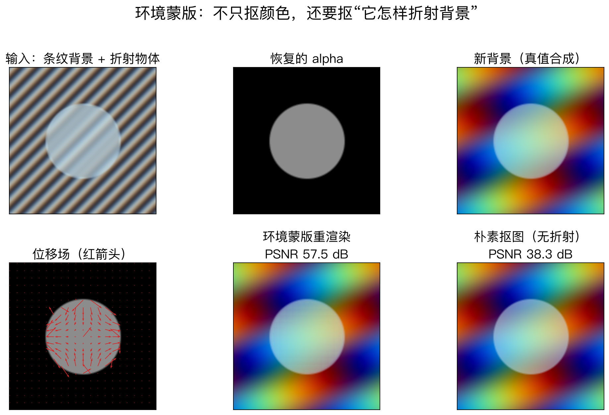
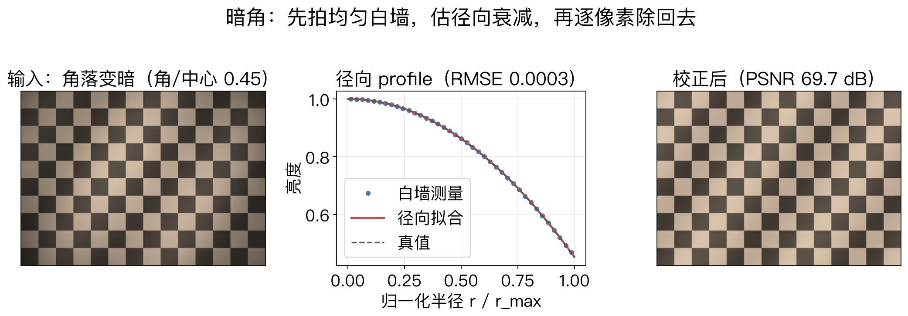
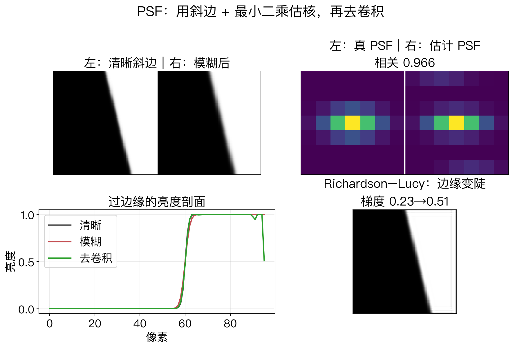

第 14 章 + 第 10 章 · 光度与渲染
两个物理层：折射与镜头
环境蒙版：透明物体从背景哪里取色。
暗角：广角、大光圈镜头角落变暗。
PSF：镜头把边缘糊成卷积核。
一个在物体侧，一个在相机侧。
依据：原书第 883、615、616 页
三个量
环境蒙版：折射与反射
暗角：亮度衰减
PSF：空间模糊
正课第一百三十四集
01 / 12
环境蒙版 · 原书第 883 页
抠图之外，还要记取色方向
透明物体放到新背景，不能只抠颜色。
要建模每个像素从环境哪个方向取光。
四维映射把像素坐标映到方向。
整体是六维表示，Zongker 等命名。
依据：原书第 883、885 页
多出什么
普通 matte：alpha 和 F
环境蒙版：方向和强度
能表现背景被放大、翻转、扭曲
正课第一百三十四集
02 / 12
合成方程 · 原书第 884 页
alpha 加一个间接项
普通合成：C = αF + (1−α)B。
环境蒙版再加间接项 I = R∫A B。
复杂版本用多个有向高斯叠加。
每个高斯有中心、宽度和方向。
依据：原书第 884 页
C = αF + (1−α)B + I
I = R∫A B；α 管盖住多少，F 管物体颜色，R 和 A 管背景从哪来、来多少
正课第一百三十四集
03 / 12
采集 · 原书第 885 页
拍一套图案，解一组参数
物体放在显示器前，换不同图案。
纯色背景估 alpha 和 F。
横竖条纹估支持区。
四方向高斯条纹估多个高斯响应。
依据：原书第 885 页
边界
多背景方法处理不了动态场景
水倒进杯子要用单张渐变背景
单张渐变估一个二维位移
正课第一百三十四集
04 / 12
实验一 · 合成折射物体
多一层折射，重渲染就对了
160×160 折射物体，4 方向 3 相位条纹。
alpha 误差 1.79e−17，位移误差 1.901 像素。
折射权重误差 0.0291。
重渲染 PSNR 57.52，朴素抠图 38.29 分贝。
依据：本集实验（readings.environment）

环境蒙版：输入、alpha、位移场、新背景真值/重渲染/朴素抠图｜程序生成，未用教材或论文原图
正课第一百三十四集
05 / 12
表示代价 · 原书第 885 页
6D、8D，再加时间和波长
环境蒙版原理上是六维表示。
覆盖所有视点需要 8D 映射。
4D BRDF 可以降回 6D，但丢掉多重折射。
加时间、加波长，维度还会涨。
依据：原书第 885 页
本集简化
lab 每像素一个位移、一个权重
不是完整多高斯模型
真实玻璃可能有多条折射路径
正课第一百三十四集
06 / 12
暗角 · 原书第 615–616 页
角落为什么变暗
广角、大光圈镜头容易让角落变暗。
分自然、光学、机械三类。
最准的标定是积分球或均匀白墙。
没有暗角模型，梯度域融合也拼不好全景。
依据：原书第 615–616 页
只跟半径有关
先估乘法衰减
再逐像素除回去
三类叠加还是一条径向曲线
正课第一百三十四集
07 / 12
实验二 · 合成暗角
白墙估衰减，角落补回来
200×280 合成图，角落亮度是中心的 0.450。
白墙按半径分箱，拟合 1 − ar² − br⁴。
径向 profile 的 RMSE 是 0.00035。
校正后 PSNR 从 18.34 升到 69.73 分贝。
依据：本集实验（readings.vignetting）

暗角：输入、径向 profile 与拟合、校正结果｜程序生成，未用教材或论文原图
正课第一百三十四集
08 / 12
PSF · 原书第 616–618 页
镜头把边缘糊成卷积核
空间响应函数就是 PSF，也就是卷积核。
受镜头模糊、径向畸变、抗混叠、像素形状影响。
斜边法先得到一维 LSF，再转 MTF。
最小二乘解 B = D·I ⊛ K，得到二维核。
依据：原书第 616–618 页
斜边法的条件
边要长、要直
方向覆盖水平、垂直、对角
只有水平边只能恢复水平投影
正课第一百三十四集
09 / 12
实验三 · 斜边与 PSF
核估准，边缘才敢去卷积
96×96 斜边靶标，真 PSF 是 7×7 各向异性高斯。
估出的核与真核相关 0.966，核 MSE 0.000132。
模糊把边缘梯度从 0.343 压到 0.232。
Richardson–Lucy 去卷积后梯度回到 0.514。
依据：本集实验（readings.psf）

PSF：清晰/模糊斜边、真/估核、亮度剖面、Richardson–Lucy 结果｜程序生成，未用教材或论文原图
正课第一百三十四集
10 / 12
lab 边界 · 小节更正
合成管线不能冒充真实相机
三个实验都是合成的。
环境蒙版只有单位移、单权重。
暗角用白墙，PSF 用已知斜边靶标。
暗角是 §10.1.3，PSF 是 §10.1.4，不是 §10.1.2。
依据：本集实验；原书小节 §10.1.3–§10.1.4
真实相机还有
噪声、滚动快门、色差
非均匀照明
先线性化、去噪、配准，再估参数
正课第一百三十四集
11 / 12
第 14 章 + 第 10 章 · 三线闭环
透明、变暗、变糊
环境蒙版回答：透明像素从背景哪里取色。
暗角回答：角落为什么变暗。
PSF 回答：边缘为什么变糊。
三件事都先测量，再反着补回去。
依据：原书第 883–885、615–620 页
顺序与思路
先修暗角和 PSF
再谈环境蒙版合成
把物理效应显式写出来
正课第一百三十四集
12 / 12